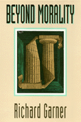

A philosopher proposes a blend of compassion, non-duplicity, and clarity about the use of language
A philosopher proposes a blend of compassion, non-duplicity, and clarity about the use of language


 A philosopher proposes a blend of compassion, non-duplicity, and clarity about the use of language
A philosopher proposes a blend of compassion, non-duplicity, and clarity about the use of language

|  |
Beyond MoralityRichard Garnerpaper EAN: 978-1-56639-108-5 (ISBN: 1-56639-108-3) |
"Garner is one of the first philosophers since Nietzsche to take seriously the idea that 'morality' might be nothing more than a sham.... In his hands, 'amoralism' turns out to be more appealing and humane than many thinkers' versions of 'morality'!"
—James Rachels
"Morality and religion have failed because they are based on duplicity and fantasy. We need something new...." With this startling statement, Richard Garner begins to define a system of behavior that will nurture our capabilities for love and language, for creation and cooperation.
The satisfying personal and social strategy for living Garner proposes is "informed, compassionate amoralism." To do without morality, he argues, is to reject the idea that there are intrinsic values, objective duties, and natural rights. Leaving illusions behind us and learning to listen to others and to ourselves may be what we need to lead us out of the darkness.
Garner builds his case on a survey of moral definitions and arguments from ancient Greece forward. Beyond Morality revisits the tenets of Christianity and Eastern religious, providing readers with a meaningful overview of the history of moral thought.
Quotations illuminate and illustrate the text, adding to the value of Beyond Morality as a textbook for ethics courses.
"This work is a tremendous achievement. The author's erudition is overwhelming, yet it is expressed without overwhelming the reader. He goes easily from modern to ancient thought. Some of the most difficult areas of thought are explored with such clarity that readers unfamiliar with them can grasp them readily. One of the chief virtues of this highly informative book is that it sets the problems of ethics in the context of wider areas of through and brings them down to earth. Garner's main thesis, referred to as amoralism, is extremely important, not only to philosophy, but to all popular thinking about ethics, both theoretical and applied. He has done a magnificent job defending this important theme. This is a landmark work."
—Richard Taylor, Professor of Philosophy, Emeritus, University of Rochester
Read a review from Philosophy and Phenomenological Research, Volume 57.3 (September 1997), written by David B. Wong (pdf).
Preface
Introduction
1. Moral Arguments and Morality
Conversations and Conventions •
Moral Discussions •
Moral Philosophy •
The Burden of Proof •
Moral, Amoral, and Immoral
2. Doubts about Morality
Dogmatism •
Universalism •
Relativism •
Skepticism •
Non-Cognitivism •
The Function-of-Language Argument •
Anti-Realism •
First Conclusion
3. Morality and Its Denial
A Literary Example and a Warning •
Moralism versus Amoralism •
What Is the Difference between Moralism and Amoralism?
4. History, Hallucinations, and Human Nature
Original Humans •
Hobbes •
Rousseau •
Human Nature •
Human History •
Agriculture, Cities, and the Goddess •
Murder in Mesopotamia •
Law: Marduk and Hammurabi •
Divine Messages •
Explaining the Messages •
Early Morality
5. Moralism and Amoralism in India
The Aryans •
The Vedas •
The Upanishads •
Karma and Reincarnation •
Heterodoxies •
Carvaka •
Jainism •
Buddhism •
Persuasive Definitions •
Moralism and Indian Thought
6. Moralism and Amoralism in China
Confucianism •
Moism •
Daoism •
Mencius •
The School of Names •
The Yin-Yang School •
Legalism •
Buddhism in China •
Moralism and Chinese Thought
7. Moralism and Amoralism in Greece
Minoans and Mycenaeans •
The Aryan Harvest •
�Agathos� and Its Persuasive Definition •
Hesiod •
Government and War •
The Philosophers •
Socrates and Plato •
Justice and the Republic •
The Theory of Forms •
Aristotle •
Moralism and Greek Thought
8. Gods and Religious Morality
The Enforcers •
Some Unfamiliar Deities •
Revelation and Divination •
What to Believe? •
The Genetic Fallacy Fallacy •
God-based Moralism
9. Experience and Reason: Secular Morality
Rationalist Attempts to Make a Secular Morality •
Empiricist Attempts to Make a Secular Morality •
David Hume •
Richard Price and Thomas Reid •
Immanuel Kant •
Intuitionism •
Making Moralism True by Definition •
Conclusion
10. A Survey of Moral Theories
Metaethics •
Normative Ethics •
Value •
Obligation •
Rights •
Virtue •
Conclusion
11. Amoralists, Critics, Pseudo-Amoralists, and Backsliders
The Amoralist Need Not Be an Immoral, Heartless, Selfish Jerk Who Denies the Obvious •
Some Responses to the Amoralist •
Pseudo-Amoralists and Backsliders •
The Amoralist •
What Is Wrong with Morality?
12. Desires and Emotions
What to Do about Desires and Emotions •
One Extreme: Eliminate Desires and Emotions •
The Other Extreme: Indulge Desires and Emotions •
A Middle Way •
Another Middle Way •
Conclusion
13. Decisions, Control, and Harmony
Making Decisions •
The Bicameral Brain Again •
Socialization •
Force and Control •
The Way of Harmony
14. Language, Truth, and Non-Duplicity
Language •
Truth •
Non-Duplicity
15. Applied Amoralism
Applied Ethics •
The Alternative—Applied Amoralism •
The Questions •
Last Conclusion
Works Cited
Index
 | Richard Garner is Professor of Philosophy at The Ohio State University. |
Ethics and Action, edited by Tom Regan.
No longer active.
© 2015 Temple University. All Rights Reserved. This page: http://www.temple.edu/tempress/titles/953_reg.html.